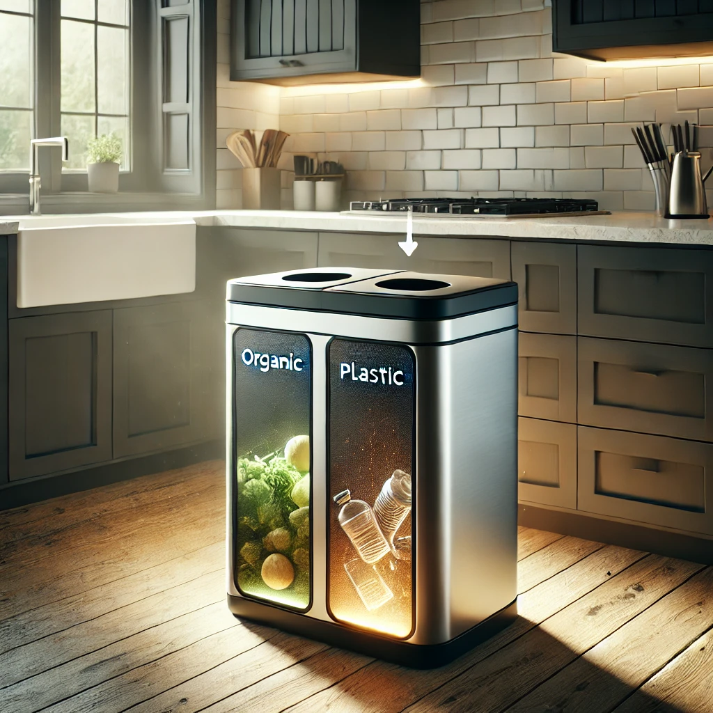

AlkyBin : Transformez Vos Déchets en Énergie et Réduisez Votre Facture !

Rejoignez la Révolution Écologique avec AlkyBin !
Avec AlkyBin, vos déchets ménagers deviennent une véritable ressource énergétique. Cette innovation révolutionnaire vous permet de :
- ✅ Réduire votre empreinte carbone de manière significative (jusqu'à 1 tonne de CO₂ économisée par an).
- ✅ Faire des économies sur votre consommation énergétique (jusqu'à 30 % de réduction sur votre facture d'énergie).
- ✅ Adopter une gestion responsable et durable de vos déchets (300 kg de déchets valorisés par an).
- ✅ Gagner en autonomie énergétique grâce à une production domestique (jusqu’à 50 kWh d’énergie produite chaque mois).
Une Technologie Innovante et Écologique
AlkyBin est bien plus qu’une simple poubelle : c’est une centrale énergétique à domicile ! Grâce à une combinaison unique de biodigestion et de pyrolyse, vos déchets se transforment en énergie réutilisable.
- 🔹 Déchets organiques ? Le biodigesteur produit du biogaz pour alimenter votre cuisinière ou votre chaudière.
- 🔹 Plastiques ? La pyrolyse les convertit en un carburant utilisable pour générateurs et moteurs.
Des Résultats Concrets pour Votre Foyer
- ✔ 300 kg de déchets valorisés par an, soit l’équivalent de 10 bacs de tri sélectif remplis.
- ✔ Jusqu’à 50 kWh d’énergie produite chaque mois, de quoi alimenter un réfrigérateur pendant 2 semaines.
- ✔ Économisez jusqu’à 200 € par an sur votre facture d’énergie.
- ✔ Réduction des déchets plastiques de 80 % grâce au traitement avancé par pyrolyse.
- ✔ Interface connectée pour suivre votre impact en temps réel et maximiser votre efficacité énergétique.
AlkyBin : Un Investissement Rentable et Écologique
- 💰 Retour sur investissement rapide : rentabilisé en moins de 3 ans grâce aux économies d’énergie réalisées.
- 🌱 Un geste concret pour la planète : participez à la réduction des déchets et à la production d’une énergie plus propre.
- 🔧 Installation simple et sécurisée, sans modification majeure de votre habitation.
Adoptez AlkyBin dès aujourd’hui et faites de votre foyer un acteur de la transition énergétique !